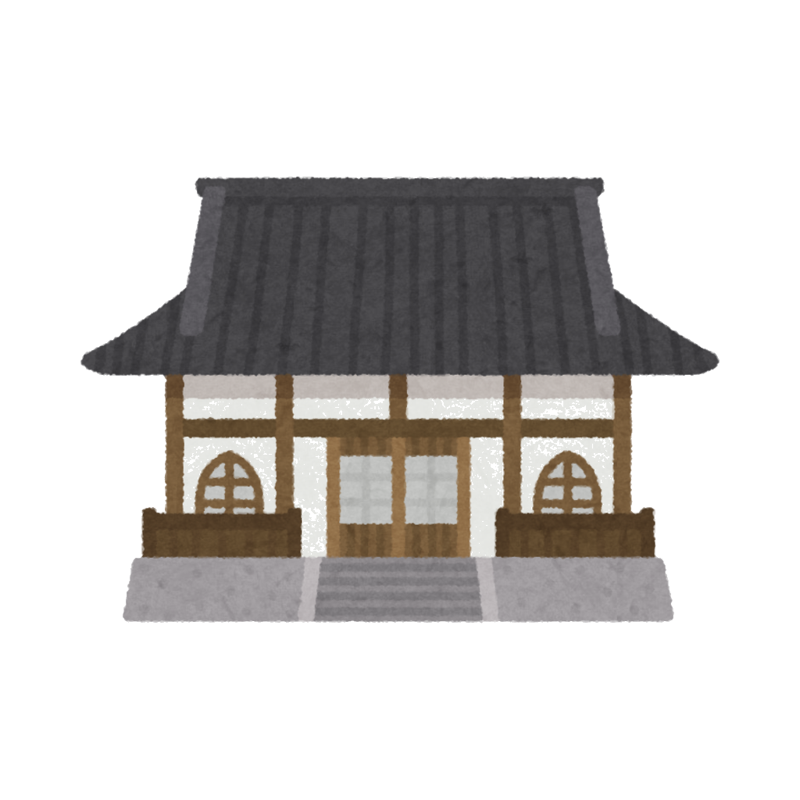
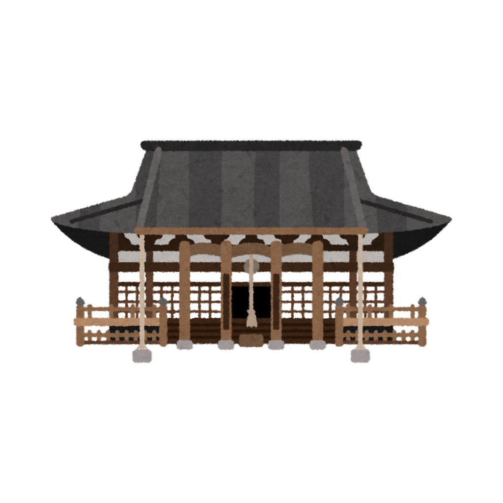

お寺の紹介真照寺について
澤水山真照寺は、真宗大谷派の寺院として１７世紀に創建されました。「真に照らす」という寺号が示すように、仏の光明がすべての人の心を照らし、迷いを取り除くことを願いとして、長く地域の皆様とともに歩んでまいりました。
創建以来、幾多の時代の変遷を経ながらも、地域の門信徒の皆様に支えられ、今日まで法灯を守り続けております。境内には四季折々の花々が咲き、時間の止まったような静けさを感じられます。
大切に伝えられてきた仏の教えに触れられる場として、お寺の門はいつも開いております。どうぞお気軽にお参りください。
| 寺院名 | 真照寺（しんしょうじ） |
|---|---|
| 宗派 | 真宗大谷派 |
| ご本尊 | 阿弥陀如来 |
| 創建 | 17世紀 |
| 住職 | 雲井一久 |
| 所在地 | 〒224-0043 神奈川県横浜市都筑区折本町1604 |
| 電話番号 | 045-941-9736 |
| FAX | 045-943-9801 |
| メール | takusuisan.shinshoji@gmail.com |
| 拝観時間 | 8:00〜17:00（年中無休） |
参道の入口となる山門。境内と外の世界を分ける「結界」の役割を持ちます。

ご本尊をお祀りする中心の建物。各種法要や法話会はこちらで行われます。
除夜の鐘でも知られる梵鐘。その音色は心の穢れを祓うといわれています。
四季折々の草木が彩る静寂な庭園。散策しながらひとときの安らぎをどうぞ。
檀家の皆様のご先祖様をお守りする墓地と、現代のライフスタイルに合わせた納骨堂。
境内には俳人・大野林火と中戸川朝人の句碑が建てられています。文学と信仰が交差する、この地ならではの風景です。
SHINSHOUJI AS A FILMING LOCATION
2025年10月に公開された話題作のお墓参りシーンが、真照寺の境内にて撮影されました。主演・吉永小百合、監督・阪本順治という黄金コンビによる感動大作の一場面が刻まれています。
女性登山家・田部井淳子の実話をもとに、家族への愛と命の輝きを描いたこの作品。そのロケ地として選ばれた真照寺が、スクリーンを通じて全国の観客の記憶に残っています。
公式サイトを見る →